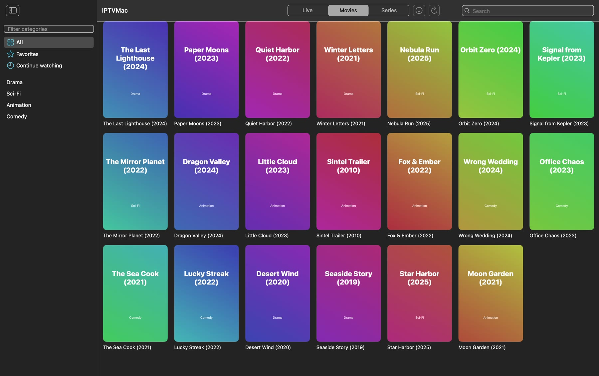
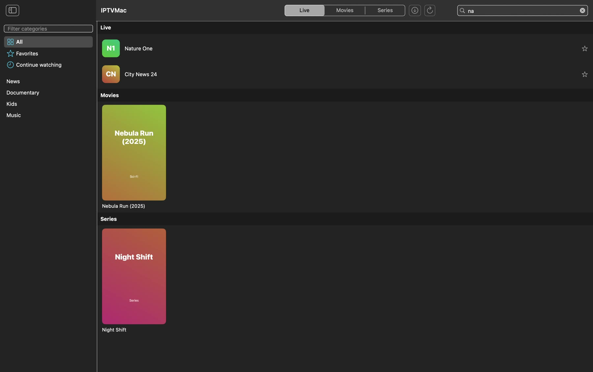
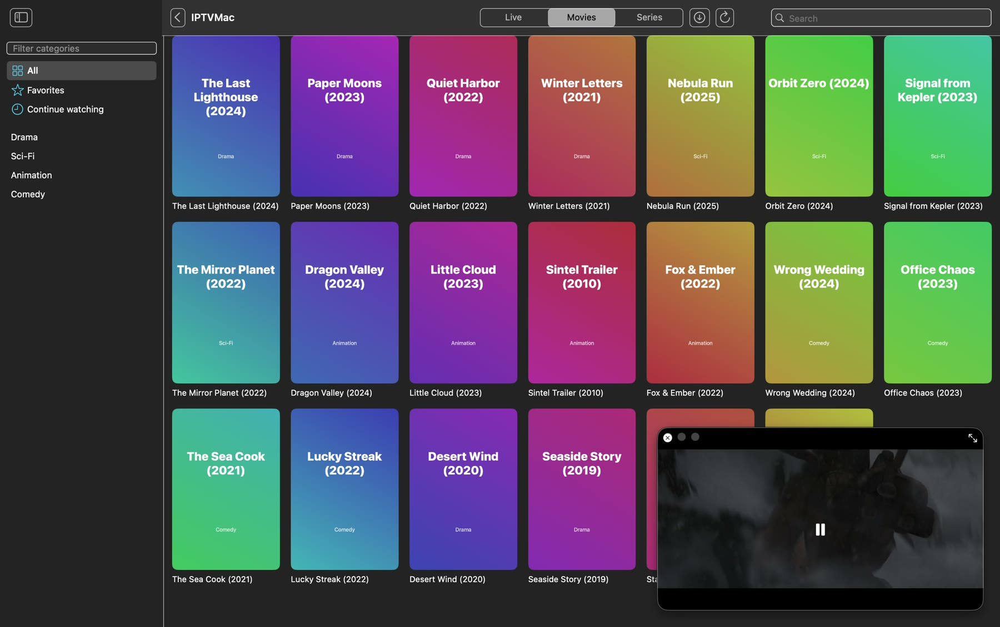
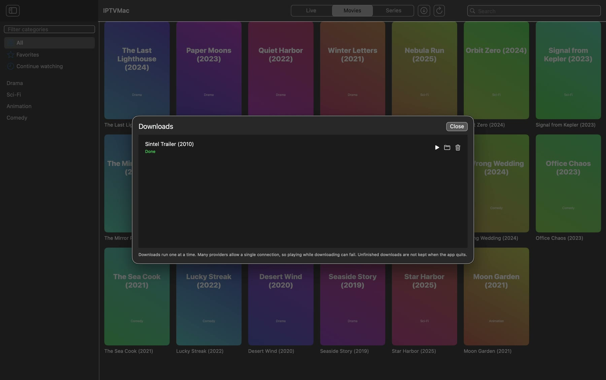

Search that keeps up with 100,000 items
Type to search inside a category, inside a section, or everywhere. Results appear as you type and are grouped into live, movies and series.
Xtream Codes and M3U sources, instant search, Picture in Picture, catch-up and downloads. Free and open source.

An 80 second tour: live channels, search, favorites, the player, 2x speed, Picture in Picture and downloads. The channels and posters are invented for the demo; the footage is the Blender Foundation film Sintel.
Type to search inside a category, inside a section, or everywhere. Results appear as you type and are grouped into live, movies and series.

Built on mpv. It plays the broken TS and HLS streams that system players give up on, reconnects when a stream drops, and hides its controls so the picture fills the screen.
A floating Picture in Picture window stays on top, across Spaces. Pick another channel or movie and the video keeps playing.

Download movies and episodes, or a whole season on Xtream series, to a folder you choose. Play them from the Downloads screen.

Embedded tracks, .srt and .ass files by menu or drag and drop, size and delay, preferred languages.
Watch past programs on channels that support it, and see what is on now and next.
When an episode ends, the next one starts after a 5 second countdown. You can cancel it.
Star channels and movies. Movies and episodes continue where you stopped.
A full interface in three languages, with right-to-left layout.
Checks GitHub Releases, verifies a SHA-256 checksum and installs the new version.
Paste this in Terminal. It downloads the latest release, checks its SHA-256, copies IPTVMac to Applications and opens it.
curl -fsSL https://raw.githubusercontent.com/Goelir/IPTVMac/main/install.sh | bashWhy a command? IPTVMac is not notarized by Apple, which needs a paid developer account, and macOS blocks apps that a browser marked as downloaded from the internet. A file fetched with curl is not marked, so there is nothing to bypass. The script is short and public: install.sh.
IPTVMac is a free, open source IPTV player for Mac. It plays Xtream Codes and M3U sources with a built-in mpv player, instant search, subtitles, Picture in Picture, catch-up, downloads and an interface in Hebrew, English and Arabic.
No. IPTVMac is only a player. It does not include, host or link to any channels, movies or series. You add a source from a provider you are authorized to use.
Yes. For Xtream Codes you enter the server address, username and password from your provider. For M3U you enter a name and the playlist link.
Apple Silicon Macs (M1 or later) with macOS 14 or later. Intel Macs are not supported.
Yes. It is free and open source under the GPL-3.0 license, with no ads and no tracking.
IPTVMac is not notarized by Apple, which requires a paid developer account. Install with the one-line command above, which avoids the warning, or open System Settings, Privacy and Security, and choose Open Anyway.
Yes. A floating window stays on top of other apps and across Spaces while you browse for something else.
Yes, on channels where your provider supports catch-up. Pick a program from the guide.
The source code is public. Updates come from GitHub Releases and are checked against a SHA-256 checksum. Account passwords are stored in the app's local database, readable only by your user.
IPTVMac is Mac only. If you need something different: